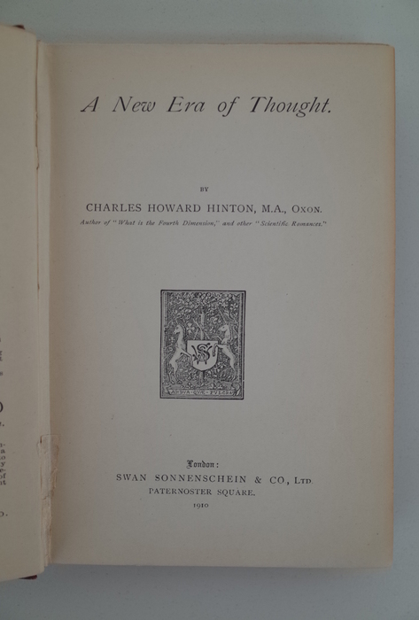
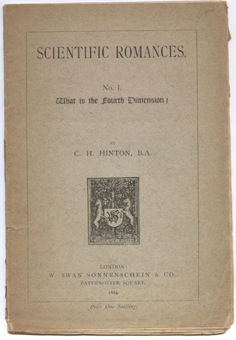
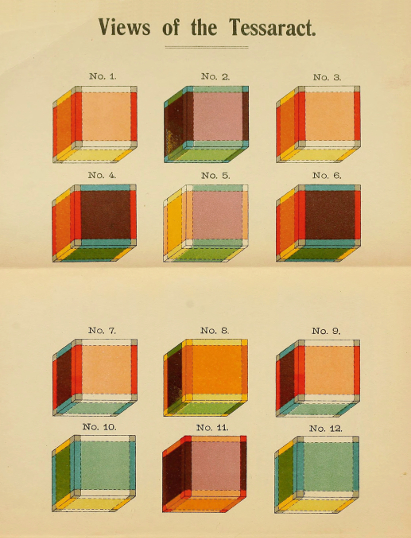

Hinton made a wide variety of speculations about the Fourth Dimension, and published them in books such as A New Era of Thought and The Fourth Dimension.He referred to these novels as "Scientific Romances". Essentially, his writing revolved around explaining his dimensional concepts through creative, science-fiction narratives.
 
For example, Hinton speculated that two additional directions exist in the fourth dimension: "kata" (Greek "down from") and "ana" (Greek "up toward"). If a person wants to view the fourth dimension, Hinton claims they must study his colored cubes (pictured below). However, these ideas were rejected by many scientists and mathematicians, one of which claimed thinking about the cubes could make you insane. Yet one can agree that the cubes are extremely well-recorded and designed.

Truly, Charles Howard Hinton's writing-oriented mind assisted in the preservation, and perhaps intrigue, of his theories.